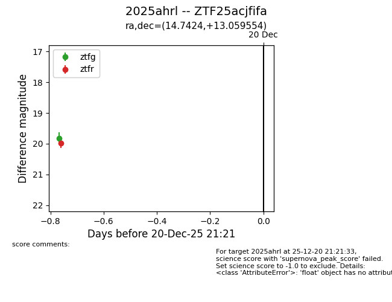
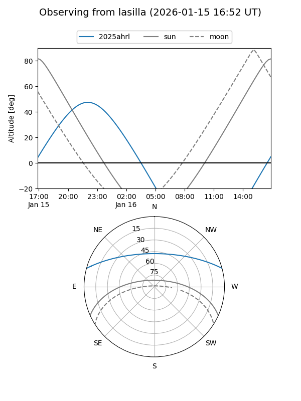
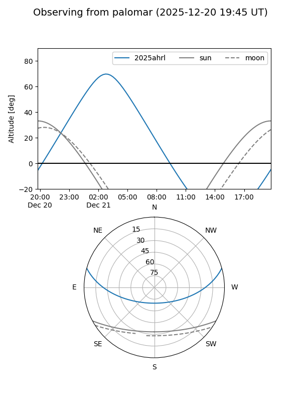
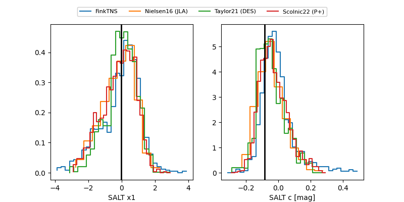

2025ahrl
Target 2025ahrl at 2025-12-21 03:53
Aliases and brokers:
FINK: fink-portal.org/ZTF25acjfifa
Lasair: lasair-ztf.lsst.ac.uk/objects/ZTF25acjfifa
ALeRCE: alerce.online/object/ZTF25acjfifa
TNS: wis-tns.org/object/2025ahrl
YSE: ziggy.ucolick.org/yse/transient_detail/2025ahrl
alt names
ZTF25acjfifa (ztf,fink_ztf)
2025ahrl (tns,yse)
Coordinates:
equatorial (ra, dec) = 14.7424,+13.05955
equatorial (HMS+DMS) = 00:58:58.18,+13:03:34.39
galactic (l, b) = (125.7726,-49.77065)
Flags:
Photometry:
last ztfg=19.82, ztfr=19.99
1 ztfg, 1 ztfr detections
Lightcurve

Visibility


Additional plots
